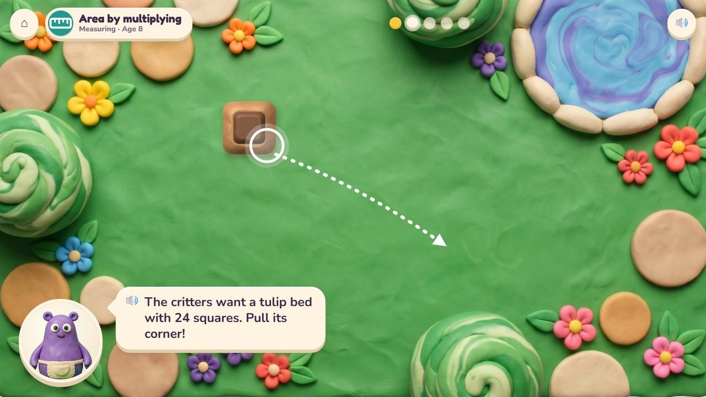
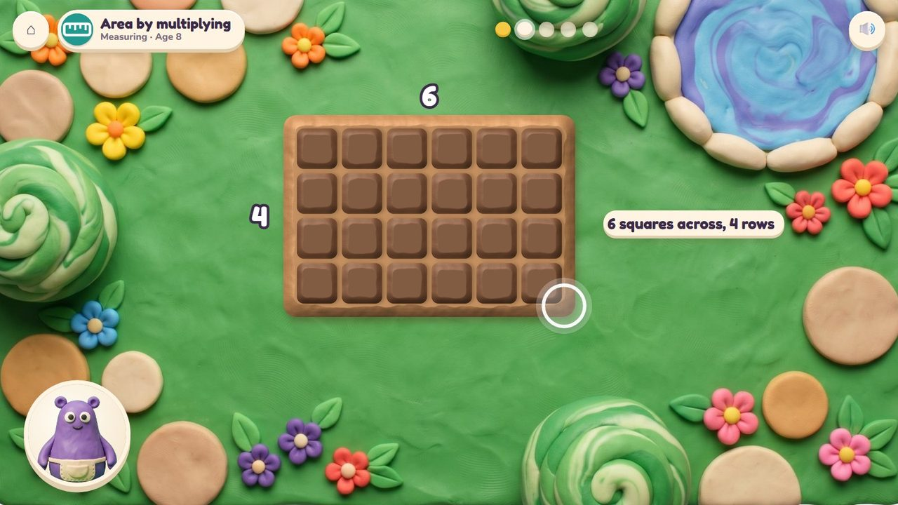
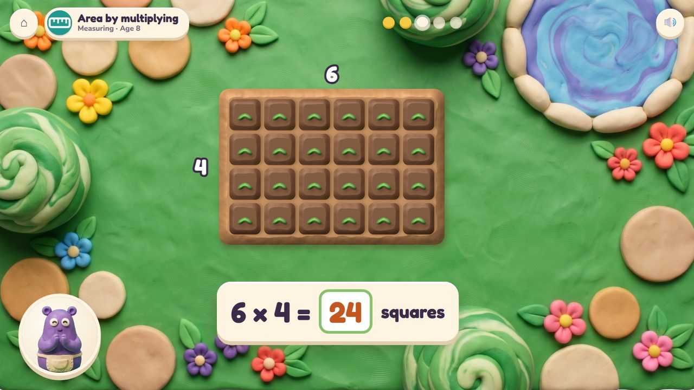
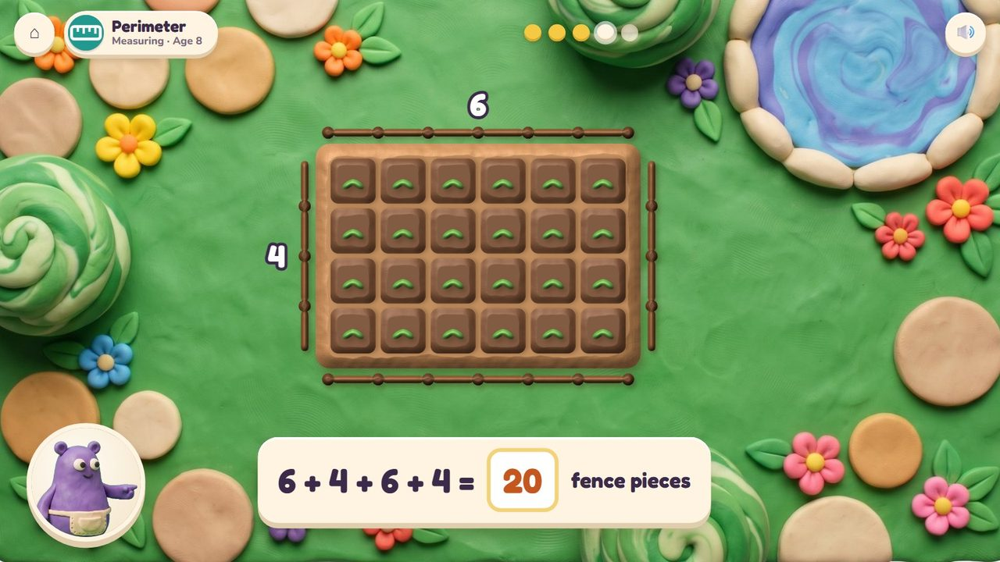
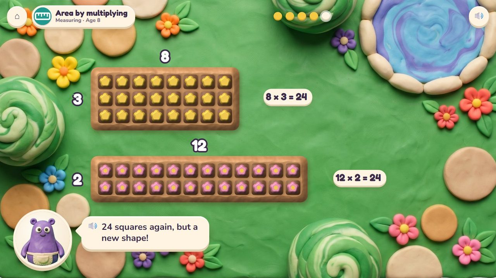
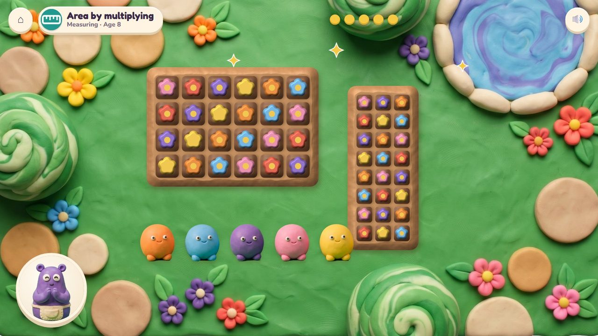
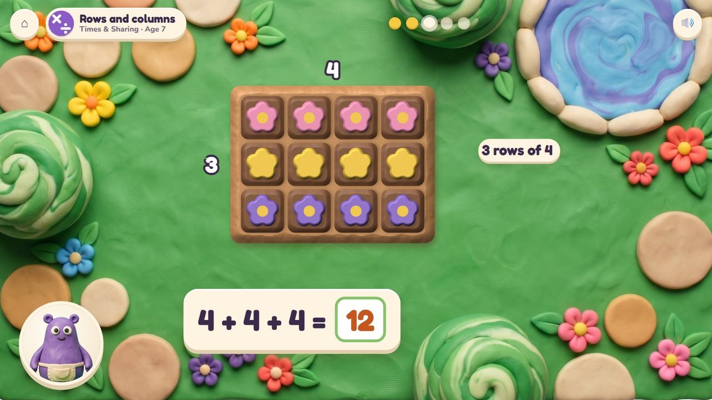

Pull a bed's corner: it grows square by square, in rows and columns.
4 lessons (3 taught here first, the rest practised here) in 3 topics:
Counting & NumbersTimes & SharingShapes & Space

Mumba plants flower beds for the critters in the Critter Garden, seen from above. The child pulls a bed's corner over the grass; it grows in whole squares, rows by columns, and a seed pops into every square and blooms. A fence goes round the edge. Rows and columns are times tables you can see; the squares are area, the fence is perimeter; a bed split in two shows 7 × 8 = 7 × 5 + 7 × 3; big beds in patches show multiplying big numbers; boxes of soil show volume.
Pull a corner, draw a split line, tap squares, stack boxes.
The beds bloom and the critters come to visit.
A storyboard of the game in one lesson, drawn from the app's own clay pictures.
The critters want a tulip bed with 24 squares.
🔊 “The critters want a tulip bed with 24 squares. Pull its corner!”

The bed grows in whole squares: 6 across, 4 rows.

6 × 4 = 24 squares.

6 + 4 + 6 + 4 = 20 fence pieces: the perimeter.

24 squares again: 8 × 3 and 12 × 2.
🔊 “24 squares again, but a new shape!”

The beds bloom and the critters come.
The bed is already drawn: type how many squares, flowers or fence pieces. Ten questions at 6-7, a 60-second round from 8; your time and your best on screen; only right answers count; a miss shows the answer and comes back later. No clock under 6.
The badge at the top left says the topic, the lesson and the age.

3 rows of 4: 4 + 4 + 4 = 12.
| Age 7Grade 2 | Odd and even; rows and columns (3 rows of 4 = 4 + 4 + 4); a rectangle in squares. |
| Age 8 to 10Grades 3 to 5 | From Grade 3 these lessons are practice screens, not games. |
up to 5 × 5, then 10 × 10, then patches for big numbers, then boxes
how many flowers, rows, squares, fence pieces, a missing side
row by row counting, then skip counting, then the split line
pulling the corner; the number pad
Age by age they are on the full list; here grouped by topic (the first activity named teaches a lesson, the others practise it).
2.OA.3Poke Pals · Garden Beds2.OA.4Garden Beds · Peek-a-Peep2.G.1Garden Beds · Sea Wall2.G.2Garden Beds · Sea Wall